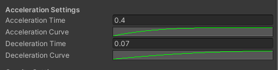

Info
Moose Lost in the Woods
Moose Lost in the Woods is a cute and cozy 3D-platformer without a language barrier. The project was an assignment at Södertörn University but my team and I's goals was creating a portfolio project that had a chance of being nominated for the Swedish Game Awards.
My role
I was mainly responsible for all programming relating to the character. I had never made a character controller before and wanted to challenge myself. This also led to me being responsible for programming navigation within menus for the gamepad since I became familiar with Unity's New Input System.
I was interested in sound design at the time and wanted to explore sound design and implementation on this project. I had designed sounds for a couple of games before and felt confident I could accomplish the task. In previous projects, sound implementation was a bit sub-par, and this time I wanted to explore implementation with FMOD, a common firmware for the task.
I also had the role as scrum master. I had been scrum master in several projects before and felt very comfortable in the role. To make sure I did as good a job as possible I took an online course in scrum and consulted with a contact within the tech industry on best practices for a good scrum.
Character Controller
Analog input
Using Unity's Input System, I could easily read the magnitudes of the vector, or how much the player was pushing the stick in any given direction, and then multiply those values into the relative direction of the camera. Then I could simply use AddForce() on the rigidbody to move the player in the desired direction.
private Vector3 ReadMovementInput() { Vector2 inputDirection = playerInputActions.Player.Move.ReadValue<Vector2>(); //Wont do any further calculation if the player is not currently inputting anything if (inputDirection.magnitude < 0.4f) { return latestMoveDirection; } float horizontalInput = inputDirection.x; float verticalInput = inputDirection.y; Vector3 movementDirection = GetRelativeCameraVector(horizontalInput, verticalInput); return movementDirection; }
One Issue I encountered with gamepad movement was snapback. When you let go of the stick it will snap back in the other direction, causing the player to move in the opposite direction briefly. With how rotation was set up this also caused the player to always rotate forwards after you let go of the stick. To combat this, I implemented a dead zone check. If the vector's magnitude is below a certain value, the method will just return the latest move direction. When letting go the player will now keep moving in the direction they were going previously.
Analog input of course also needs to be reflected in the animation of the character. To accomplish this, the script checks the magnitude of the latest move direction and then sets the Animation Controller speed variable to that amount. The sprintMultiplier variable is a set value, it represents how much faster the player will mov when sprinting in relation to their walking speed. The animator needs to account for this as well which is why we multiply the magnitude with the currentMultiplier.
float currentMultiplier = isSprinting ? sprintMultiplier : 1; if (currentSpeed > 0.5f) { playerAnimator.SetFloat(speedString, latestMoveDirection.magnitude * currentMultiplier); } else { playerAnimator.SetFloat(speedString, 0); }
Acceleration and deceleration
It would feel like the character moves too abruptly if there is no acceleration or deceleration. In the beginning, I had made one coroutine that would handle both acceleration and deceleration. But in the end, I made two coroutines, one for acceleration and one for deceleration. This was because we wanted the acceleration time and curve to be different from the deceleration time and curve. This could definitively be done in the same coroutine but, it was faster to modify and more readable to have the code this way.
When the player rapidly turned around, we still wanted to keep the characters momentum. I made two methods that would handle the starting and stopping of the acceleration coroutine. Using Unity's Input System these methods subscribed to the InputAction of movement starting and stopping respectively. Then I could simply lerp the value of currentSpeed from its starting speed to the desired speed using the different curves and times. This way we would not have to accelerate from 0 each time, making movement smoother.
private void DecelerationStart(InputAction.CallbackContext context) { if (accelerationRoutine != null) { StopCoroutine(accelerationRoutine); } accelerationRoutine = StartCoroutine(Decelerate(0.0f)); } IEnumerator Decelerate(float desiredSpeed) { float currentDecelerationTime = decelerationTime; if (currentState == PlayerState.Swimming) { currentDecelerationTime = waterDecelerationTime; } float elapsedTime = 0; float startSpeed = currentSpeed; while (currentDecelerationTime > elapsedTime) { currentSpeed = Mathf.Lerp(startSpeed, desiredSpeed, decelerationCurve.Evaluate(elapsedTime / currentDecelerationTime)); elapsedTime += Time.deltaTime; yield return null; } SetSpeedToZero(); accelerationRoutine = null; } private void AccelerationStart(InputAction.CallbackContext context) { latestMoveDirection = Vector3.zero; if (accelerationRoutine != null) { StopCoroutine(accelerationRoutine); } accelerationRoutine = StartCoroutine(Accelerate(maxWalkSpeed)); } IEnumerator Accelerate(float desiredSpeed) { float elapsedTime = 0; float startSpeed = currentSpeed; while (accelerationTime > elapsedTime) { currentSpeed = Mathf.Lerp(startSpeed, desiredSpeed, accelerationCurve.Evaluate(elapsedTime / accelerationTime)); elapsedTime += Time.deltaTime; yield return null; } currentSpeed = desiredSpeed; accelerationRoutine = null; }
Jump buffering and coyote time
It often felt like the game ate your inputs and you would miss jumps. To remedy the problem, I implemented jump buffering and coyote time, two staples of great platforming games. I separated the jump into two methods; JumpPress() and JumpExecute(). I also introduced the variables timeSinceLastPlatform, hasJumped, and timeSinceInput. JumpPress() subscribed to the InputAction of, you guessed it, pressing the jump button, and JumpExecute() executes the jump if the right conditions are met.
void JumpPress(InputAction.CallbackContext context) { if (currentState == PlayerState.Airborne) { timeSinceInput = 0; } if (!hasJumped && timeSinceLastPlatform < coyoteTime) { JumpExecute(); return; } if (currentState != PlayerState.Grounded && currentState != PlayerState.Swimming) { return; } //This is to prevent "Super jumping", or the jump executing multiple times cause you stay grounded too long if (timeSinceLastJump > jumpCooldownTime) { JumpExecute(); } } void JumpExecute() { if (((isOnSlope || hasJumped) && currentState != PlayerState.Swimming) || isBouncing) { return; } hasJumped = true; timeSinceLastPlatform = coyoteTime; timeSinceLastJump = 0; playerRigidbody.velocity = new Vector3(playerRigidbody.velocity.x, 0, playerRigidbody.velocity.z); //Actual jump force being applied playerRigidbody.AddForce(Vector3.up * jumpForce, ForceMode.Impulse); //Different sound depending on if you jump in water or on land if (currentState != PlayerState.Swimming) { FMODUnity.RuntimeManager.PlayOneShotAttached("event:/Player/Player_Jump", gameObject); } else FMODUnity.RuntimeManager.PlayOneShotAttached("event:/Player/Player_Water_Exit_Jump", gameObject); timeSinceInput = jumpBufferTime; }
If the player is airborne when pressing the jump button, we will begin counting the time since the input. If timeSinceInput is lower than the set value of jumpBufferTime when the player lands we will execute the jump.
When the jump is executed, we set the hasJumped value to true and when the player lands we set it to false. Using Unity's built-in method OnCollisionExit() we can start counting the timeSinceLastPlatform if the player has not jumped. Then if the value of timeSinceLastPlatform is lower than the set value of coyote time we will still execute the jump, even though the player state is not grounded.
Camera
In pre-production we conducted a survey, asking our demographic several questions about games including whether they thought it was difficult when a game made them control the camera. Expectedly, this was very divisive. A kid who plays Fortnite all day might think it is easy while someone who doesn't might think it's difficult.
We decided to try tackling the problem somewhere in the middle by creating a simple camera. The camera only allows the player to rotate to the left and right. The player cannot zoom, and neither can they look up and down. We also added other assistive elements such camera switching view automatically when bouncing on mushrooms.
Rotation
I used a Cinemachine virtual camera to target and follow the player. The camera rotation script finds the player transform and then caches it. Then in Update I use transform.RotateAround to rotate around the player transform.
void RotateCamera() { if (currentRotationSpeed > 0.05) { transform.RotateAround(playerTransform.position, new Vector3(0, rotationDirection), currentRotationSpeed * Time.deltaTime); } }
Of course, we need to control when this rotation occurs. Originally, I tried using InputAction.Started when looking either left or right. This was unreliable, if the right stick is already moved slightly to one side and then you push it all the way to that same side it will have counted as the action starting 2 times. If the player moves the stick around a lot the action will start multiple times.
Instead, I read the value from Update. The previous input is also stored to do a condition check. If the previous Input was set to 0 and the new input is more than zero it means that we want to start rotating. Likewise, if the previous input was more than 0 and the new input is less than zero it means that we should stop rotating.
private void Update() { float previousInput = horizontalInput; Vector2 input = playerInputActions.Player.Look.ReadValue<Vector2>(); input.Normalize(); horizontalInput = input.x; if ((previousInput <= 0 && horizontalInput > 0) || (previousInput >= 0 && horizontalInput < 0)) { isRotating = false; } //Own coded "Deadzone" check, inputs strength must go over a certain threshold before even registering if (!isRotating && Math.Abs(horizontalInput) > deadzoneSize) { isRotating = true; StartRotation(); if (horizontalInput > 0) { rotationDirection = 1; } else rotationDirection = -1; } }
I also have to be wary of snapback for this which is why I use Math.Abs to check if the absolute value of the horizontal input is bigger than the dead zone. I utilized the same technique as with the player controller by creating acceleration and deceleration for a smoother experience.
Camera switching
We wanted to be able to switch to different camera perspectives while talking to characters to frame the dialogue better and to help players land their jumps better when jumping on mushrooms. To accomplish this, I used the Cinemachine package. The CameraManager script is a singleton pattern, any script can always access it. There are two main methods to switch cameras, ActivateCamera() and DeactivateCamera().
public void ActivateCamera(CinemachineVirtualCamera cameraToActivate) { //Safe proof so priority in cameras is not messed with if (cameraToActivate == currentCamera) return; if (cameraToActivate != bounceCamera) SCR_PlayerInputManager.Instance.Player.Look.Disable(); cameraToActivate.m_Priority = highPriority; DeactivateCamera(currentCamera); currentCamera = cameraToActivate; } public void DeactivateCamera(CinemachineVirtualCamera cameraToDeactivate) { cameraToDeactivate.m_Priority = basePriority; }
The methods each take a Cinemachine Virtual Camera as an argument and then change the priority of that Virtual Camera. The current camera is passed as an argument to DeactivateCamera() and then the current camera value is set to the new camera. Using Cinemachine and changing camera priority makes the cameras smoothly interpolate between one another instead of abruptly changing.
Other scripts communicate with the Camera Manager using the methods ResetToWorldCamera(), ActivateBounceCamera(), and ChooseCamera(). ActivateBounceCamera() and ResetToWorldCamera() are dead simple, using the ActivateCameraMethod() and then passing the stored value for each respective camera.
ChooseCamera() is used for the NPC dialogue cameras. Two Virtual Cameras are placed on the NPC, when dialogue is started the dialogue script will pass its Virtual Cameras as an argument to ChooseCamera(). Then ChooseCamera will evaluate which of the cameras are closer to the player and then choose the closest one to activate.
public void ActivateBounceCamera() { ActivateCamera(bounceCamera); } public void ResetToWorldCamera() { ActivateCamera(worldCamera); SCR_PlayerInputManager.Instance.Player.Look.Enable(); } public void ChooseCamera(CinemachineVirtualCamera[] possibleCameras) { //Set to world camera to safe proof CinemachineVirtualCamera cameraToActivate = worldCamera; float currentShortestDistance = 500; for (int i = 0; i < possibleCameras.Length; i++) { if (Vector3.Distance(possibleCameras[i].transform.position, worldCamera.transform.position) < currentShortestDistance) { currentShortestDistance = Vector3.Distance(possibleCameras[i].transform.position, worldCamera.transform.position); cameraToActivate = possibleCameras[i]; } } ActivateCamera(cameraToActivate); }
If there were only one camera that was on the opposite side of the NPC the interpolation between cameras would look very weird, which is the reason for the implementation.
Menus
Menu items
Different menu options have different functionality. One option might open up a submenu, another will allow the player to exit the game and another will allow the player to start the game. Yet, they all still need the same hover and unhover functionality. To solve this, I created the base class MenuItem. MenuItem has virtual the virtual methods Select() and Deselect(). It also has the virtual methods Hover() and Leave() which are implemented but may also be overridden.
virtual public void Select() { } virtual public void Deselect() { } virtual public void Hover(Color hoverColor) { if (buttonImage != null) { Color buttonColor = buttonImage.color; buttonImage.color = new Color(buttonColor.r, buttonColor.g, buttonColor.b, 1); } if (TryGetComponent(out TMP_Text text)) text.color = hoverColor; FMODUnity.RuntimeManager.PlayOneShot("event:/UI/UI_Move"); } virtual public void Leave(Color defaultColor) { if (buttonImage != null) { Color buttonColor = buttonImage.color; buttonImage.color = new Color(buttonColor.r, buttonColor.g, buttonColor.b, 0); } if (TryGetComponent(out TMP_Text text)) text.color = defaultColor; }
Then we can easily implement MenuItems with different functionality. For example, MenuItemPanel is very short. It only overrides Select() and Deselect() and only activates and deactivates a panel respectively.
using UnityEngine; public class SCR_MenuItemPanel : SCR_MenuItem { [SerializeField] GameObject panel; public override void Select() { panel.SetActive(true); } public override void Deselect() { panel.SetActive(false); } }
Menu input
Input is handled through the MenuInput script. The MoveCursor method subscribes to the MoveMenu.Started InputAction. We read the value and then check whether it is bigger than a set amount. The reason for this is to avoid snapback.
We will also make sure that the absolute y value is greater than the absolute x value. This is to make sure that the cursor does not move when the player is pressing in a horizontal direction since our menus are strictly vertical.
private void MoveCursor(InputAction.CallbackContext context) { Vector2 inputDirection = playerInputActions.MenuUI.MoveMenu.ReadValue<Vector2>(); if (Mathf.Abs(inputDirection.y) < 0.125f && Mathf.Abs(inputDirection.y) < Mathf.Abs(inputDirection.x)) return; inputDirection.Normalize(); if (inputDirection.y > 0) { //Up //If we are in a submenu we will look at the subitems indexes, if not we will go to through the main menu indexes if (IsInSubMenu) { if (subItemIndex == 0) return; List<SCR_MenuItem> subMenuItems = menuItemList[menuItemIndex].GetSubItems(); //If the submenu does not have any sub items, like for example the credits screen we will just return if (subMenuItems.Count == 0) return; subMenuItems[subItemIndex].Leave(defaultColor); subItemIndex -= 1; subMenuItems[subItemIndex].Hover(hoverColor); return; } if (menuItemIndex == 0) return; menuItemList[menuItemIndex].Leave(defaultColor); menuItemIndex -= 1; menuItemList[menuItemIndex].Hover(hoverColor); } else { //Down //If we are in a submenu we will look at the subitems indexes, if not we will go to through the main menu indexes if (IsInSubMenu) { List<SCR_MenuItem> subMenuItems = menuItemList[menuItemIndex].GetSubItems(); //If the submenu does not have any sub items, like for example the credits screen we will just return if (subMenuItems.Count == 0) return; if (subItemIndex == subMenuItems.Count - 1) return; subMenuItems[subItemIndex].Leave(defaultColor); subItemIndex += 1; subMenuItems[subItemIndex].Hover(hoverColor); return; } if (menuItemIndex == menuItemList.Count - 1) return; menuItemList[menuItemIndex].Leave(defaultColor); menuItemIndex += 1; menuItemList[menuItemIndex].Hover(hoverColor); } }
Audio Implementation
I designed all the sounds in the game using free sound libraries as well as recording my own sound layers. I used Reaper to edit the sounds and then I exported each layer of the sound separately. I also created multiple variations for each layer to create variety. Then using FMOD I could randomize which sound of which layer should play, effectively creating even more variations. For example, If I had 3 layers which each had 3 variations, I would end up with 3^3 = 27 unique sounds for a single action.
In the code, all we have to do is access the FMODUnity library and its runtime manager. Then we can simply call the method PlayOneShot() and pass in the name of the sound event.
public void PlayStepSound() { if (player.IsSprinting) { dustParticle.Play(); RuntimeManager.PlayOneShotAttached("event:/Player/Player_Step_Sprint", gameObject); } else RuntimeManager.PlayOneShotAttached("event:/Player/Player_Step", gameObject); }
VCAs and volume
Most games nowadays have the option to higher and lower the volumes of different types of sound. We also wanted to implement this type of solution. To do this, different types of sounds were separated into four different VCAs in FMOD: Master, Ambience, SFX, and music. Using a Slider and the MenuItemSlider script we increment the value of the slider and then set the related VCAs volume to that Slider's value.
We also make sure that the slider has a min value of 0 and a max value of 2. By default, the VCA volume is set to 1. This makes sure the slider starts in the middle and that we can both lower and raise the volume.
public void ChangeValue(float strength) { if (slider.value + increment * strength > slider.maxValue) { slider.value = slider.maxValue; vca.setVolume(slider.value); return; } if (slider.value + increment * strength < slider.minValue) { slider.value = slider.minValue; vca.setVolume(slider.value); return; } slider.value += increment * strength; vca.setVolume(slider.value); }
Bus manipulation
Busses in FMOD are mainly used to add effects to a sound. For example, if the player enters a cave a bus might be used to add more reverb to the SFX, but not the music.
In our game, there is a small party at the end of the game. We want to transition to the party music seamlessly when the player enters the party and transition back to the normal music when they exit. I used a bus to accomplish this. All we do is lower and raise the volume of the bus using a coroutine when the player enters and exits the collider. Using a coroutine and lerp will transition the music smoothly.
IEnumerator ChangeVolume(float desiredVolume) { float elapsedTime = 0; float startVolume; musicBus.getVolume(out startVolume); float currentVolume = 0; while (volumeChangeTime > elapsedTime) { currentVolume = Mathf.Lerp(startVolume, desiredVolume, volumeChangeCurve.Evaluate(elapsedTime / volumeChangeTime)); musicBus.setVolume(currentVolume); elapsedTime += Time.deltaTime; yield return null; } musicBus.setVolume(desiredVolume); volumeRoutine = null; }
Additional Programming
Save system
Initially, I was not tasked with creating the save system for the game. However, due to some complications, it became my resonsibility. We needed a save system and we needed it fast. I had created simple saving using Unity PlayerPrefs before. Although not ideal for larger projects, I just had to get a simple implementation working fast.
I needed to save the number of pinecones the player had collected, the number of planks, and which hats the player had in their inventory. Saving pinecones and planks was dead simple, just creating an Int PlayerPref for each. Then all I had to do was run a loop and use the already implemented Add() function to add the data to the inventory
The hats were a bit more complicated. When saving I got all the hat data from the inventory. Then I made a string PlayerPref for each hat name.
public void Save() { PlayerPrefs.DeleteAll(); List<SCR_InventoryItem> hats = inventory.hatInventoryList; foreach (SCR_InventoryItem hat in hats) { PlayerPrefs.SetString(hat.itemData.displayName, hat.itemData.displayName); } PlayerPrefs.SetInt("Cone", SCR_Inventory.coneAmount); PlayerPrefs.SetInt("Planks", SCR_Inventory.planksAmount); PlayerPrefs.SetString("CurrentHatPlayerPref", inventoryInput.GetCurrentHat()); PlayerPrefs.Save(); }
In the Load method, I then loaded in the hat resources to add their names to a list. Then I would loop through all the hat names in the list and if there was a PlayerPref with that name as a key, I would load that resource and then add it to the inventory.
private void FindPlayerPrefs(List<string> hatAssetNames) { foreach (string hatName in hatAssetNames) { if (PlayerPrefs.HasKey(hatName)) { SCR_ItemData hatData; hatData = (SCR_ItemData)Resources.Load($"Hats/{hatName}"); inventory.Add(hatData); } } if (PlayerPrefs.HasKey("Cone")) { for (int i = 0; i < PlayerPrefs.GetInt("Cone"); i++) { SCR_ItemData coneData; coneData = (SCR_ItemData)Resources.Load("Cone"); inventory.Add(coneData); } } if (PlayerPrefs.HasKey("Planks")) { for (int i = 0; i < PlayerPrefs.GetInt("Planks"); i++) { SCR_ItemData plankData; plankData = (SCR_ItemData)Resources.Load("Planks"); inventory.Add(plankData); } } }
This means that each name must have the exact name in the scenes as the ones in the folder. This, of course, is very unhelpful if you ever want to rename them in the folder, since you must manually go through all the hats in each scene and give them the corresponding names. It was manageable for this small game, given more time however I would try to implement it differently.
Rumble system
The rumble system was a very VERY late addition to the game. I took an old audio manager script and adapted it to work with rumble instead. The script is in a singleton pattern so any script can access it.
In the script, there is a public enum called RumbleType. We can define as many different types of rumblings as we want. Then in the editor, we can define these different rumblings. We choose the rumble type and then define its low frequency, high frequency, rumble time, and shake curve. These are all serialized fields of the Rumble class.
public enum RumbleType { ControllerConnect, Mushroom, Pickup, Build } [System.Serializable] public class Rumble { public string Name { get { return name; } private set { name = value; } } [SerializeField] string name; public RumbleType RumbleType { get { return rumbleType; } private set { rumbleType = value; } } [SerializeField] RumbleType rumbleType; public float LowFrequency { get { return lowFrequency; } private set { lowFrequency = value; } } [SerializeField] float lowFrequency; public float HighFrequency { get { return highFrequency; } private set { highFrequency = value; } } [SerializeField] float highFrequency; public float RumbleTime { get { return rumbleTime; } private set { rumbleTime = value; } } [SerializeField] float rumbleTime; public AnimationCurve RumbleCurve { get { return shakeCurve; } private set { shakeCurve = value; } } [SerializeField] AnimationCurve shakeCurve; }
Then, any script can call StartRumble() and pass in an enum value as an argument. In the method, we access all the values of that particular rumble using a dictionary that has RumbleType as a key. Then we simply start the coroutine that sets the motor speeds over some time.
public void StartRumble(RumbleType rumbleType) { if (rumbleRoutine != null) { if (Gamepad.current != null) Gamepad.current.ResetHaptics(); StopCoroutine(rumbleRoutine); } float lowFrequency = rumbleTypeDictionary[rumbleType].LowFrequency; float highFrequency = rumbleTypeDictionary[rumbleType].HighFrequency; float rumbleTime = rumbleTypeDictionary[rumbleType].RumbleTime; AnimationCurve curve = rumbleTypeDictionary[rumbleType].RumbleCurve; if (Gamepad.current != null) rumbleRoutine = StartCoroutine(RumbleController(lowFrequency, highFrequency, rumbleTime, curve)); } IEnumerator RumbleController(float lowFrequency, float highFrequency, float rumbleTime, AnimationCurve curve) { float elapsedTime = 0; float startLowFrequency = lowFrequency; float startHighFrequency = highFrequency; while (rumbleTime > elapsedTime) { lowFrequency = Mathf.Lerp(startLowFrequency, 0, curve.Evaluate(elapsedTime / rumbleTime)); highFrequency = Mathf.Lerp(startHighFrequency, 0, curve.Evaluate(elapsedTime / rumbleTime)); if (Gamepad.current != null) Gamepad.current.SetMotorSpeeds(lowFrequency, highFrequency); elapsedTime += Time.deltaTime; yield return null; } if (Gamepad.current != null) Gamepad.current.ResetHaptics(); rumbleRoutine = null; yield return null; }
Button adaption system
We wanted the buttons to adapt to whichever controller the player is using. This was especially important to us since our demographic is very young and might need to look down at the controller for the corresponding button. We were not sure we would have time to allocate to this, but we managed it in the end.
To begin with we need to be able to detect which type of controller is being used. We wanted support for XBOX, Playstation, Nintendo Switch, and of course keyboard. I define an enum called ControlType with the different control types. We subscribe to the onDeviceChange input action and call the UpdateCurrentDevice method. The method checks which type of gamepad is currently being used and returns the corresponding controls.
private void OnDeviceChange(InputDevice arg1, InputDeviceChange arg2) { if (arg2 == InputDeviceChange.Added || arg2 == InputDeviceChange.Removed) { ControlType previousControls = currentControls; ControlType newControls = UpdateCurrentDevice(); if (previousControls != newControls) { UpdateCurrentSprites(currentControls); if (listeners.Count != 0) { foreach (SCR_IButtonListener listener in listeners) listener.ChangeSprites(currentSprites); } print("New controls: " + currentControls); SCR_RumbleManager.Instance.StartRumble(RumbleType.ControllerConnect); } } }
Then we call UpdateCurrentSprites() and set all the current sprites to the sprites of the new controls using a switch.
private void UpdateCurrentSprites(ControlType newControls) { switch (newControls) { case ControlType.XBOX: CurrentJump = XBOXJump; CurrentInteract = XBOXInteract; CurrentInteractPressed = XBOXInteractPressed; CurrentMoveForward = XBOXMoveForward; CurrentMoveLeft = XBOXMoveLeft; CurrentMoveRight = XBOXMoveRight; CurrentMoveBackward = XBOXMoveBackward; CurrentMoveCamera = XBOXMoveCamera; CurrentInventory = XBOXInventory; CurrentBack = XBOXBack; CurrentResetCamera = XBOXResetCamera; CurrentSprint = XBOXSprint; break; case ControlType.Playstation: CurrentJump = PlaystationJump; CurrentInteract = PlaystationInteract; //And so on for each control type...
The controller adaption script has a list of IButtonListeners. We call ChangeSprites() on all listeners and pass in the currentSprites list as an argument. All the listener has to do is find the right index in the list and update their corresponding sprite.
This is all pretty hard-coded, and not very scalable. Looking back, a simple change you could do is make an enum that represented the different button actions and pass a dictionary to the listeners that held all the sprites with enum values as the keys. This way it is a lot clearer when working in different scripts.
Swedish Game Awards
From the start, getting nominated for SGA was one of our goals. We analyzed previous winners of SGA, analyzed previous SGA winners' trailers, and consulted with our teacher about what elements would give us the best shot at being nominated for SGA. From our analysis, we planned out the features of the game.
We saw the fruits of our labor, being nominated in not only one but four categories. We were nominated for Best Narrative, Best Design, Best Art, and Game of the Year. At the gala, we managed to snag two awards, Best Narrative for our illustrative dialogue system and Gamers' Choice, an award voted for by the public and other contestants at the SGA showcase.


Learning outcomes
One of the main takeaways was learning how to size my scripts and methods. Working with certain scripts was sometimes cumbersome because they had too much functionality. It would make it unclear what script actually did what. At the end of the project, I got a lot better at keeping the script size to its core functionality.
Scope management was also a big takeaway. Even though we had bigger plans for the game, we were fast at adapting to our circumstances, whether it be a deadline that needed to be met, prioritizing important functionality over a feature, and more. As a scrum master, this was something I always kept my eye on and something I got a lot better at as the project went on.
Designing for a demographic and playtesting has been instrumental to the creation of this game. Being able to detach and focus on the product instead of personal preferences helped us immensely, it put us in a professional mindest. Many hard decisions were made simple by testing our game on the intended audience. They would see things that we didn't. Also, it was a joy to see the kid's reactions to the game!